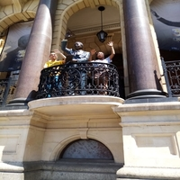

Ammaar Fakir

Which City
Bogota

I'd like to visit Bogota since its people is recorded as the happiest of all the cities in the
world.
Foreign Language
| Japanese | English |
|---|---|
| ありがとう (Arigatō) | Thank you |
| はい>。(Hai) | Yes |
| すみません (Sumimasen) | Excuse me |
Historic Places
Slave Lodge
- The Slave Lodge is one of the oldest buildings in Cape Town.
- The building was used as a slave lodge until 1811 when it was changed into government offices by the new British colonial authorities.
- Slave Lodge housed the slaves who belonged to the Dutch East India Company (VOC)
Castle Of Good Hope

- The first stone was laid on 2 January 1666 and it was completed by April 1679.
- The materials used to build the Castle were local and included rock cut from the granite outcrop on Signal Hill, and blue slate and shells – transported from Robben Island
- In 1936 the Castle of Good Hope was declared a national monument.
City Hall

- Nelson Mandela made his first free speech from a balcony at the Cape Town City Hall in 1990.
- The Hall itself is made up of components from all over the world. The honey-coloured stone, which makes up its façade of limestone, was imported from Bath in England.
- The City Hall is adjacent to The Castle Of Good Hope.